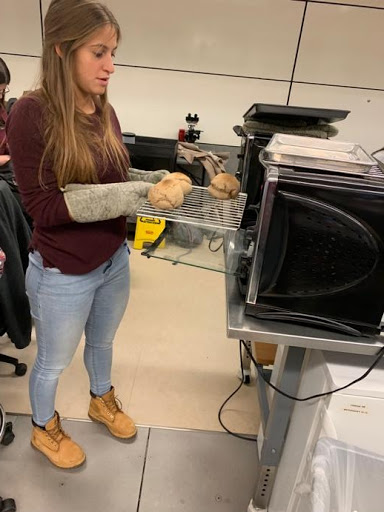

Students learned the distinction between wheat and barley in the making of leavened bread. In Ancient Mesopotamia, barley was used as a staple cereal. However, leavened bread made with barley does not rise, making the cooking and consuming experience subjectively much less exciting and enjoyable. For that reason, students learned how to balance ingredients, using a mixture of 20% wheat and 80% barley to make risen bread, which is more nutritious and enjoyable for the end consumer.
